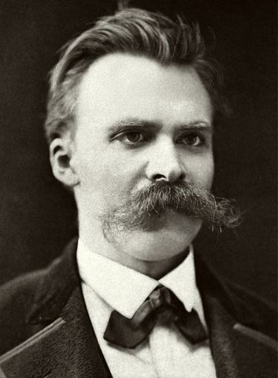

十九世纪德国哲学家、古典语文学家、诗人。他以"上帝已死"宣告虚无主义的来临，以"超人"和"永恒轮回"为现代价值重估铺设道路。他的思想横跨道德批判、文化诊断与价值创造，深刻塑造了二十世纪哲学、文学与精神分析的走向。
尼采哲学围绕"价值重估"展开。以下六个概念构成其思想骨架——从"上帝之死"的诊断出发，经过虚无主义的危机，以权力意志为根本动力，以超人为价值创造者的形象，以永恒轮回为伦理试金石，最终落到道德的谱系批判。点击卡片进入详细解读。
不是"求生意志"而是"求权力的意志"。不是支配他人，而是自我超越、自我创造的根本动力。生命本身就是权力意志。
克服虚无主义、自己创造价值的人。不是生物进化论意义上的"超等人类"，而是道德意义上的新价值创造者。
如果一切将无限次重复，你的生命是否值得重复？这不是宇宙论假说，而是伦理试金石——检验你是否热爱命运。
不是无神论宣言，而是对西方价值根基崩塌的诊断。"是我们杀死了他"——通过启蒙、科学和历史批判。结果是虚无主义。
"最高价值自行贬值"。上帝之死的必然后果。尼采区分"被动虚无主义"（衰败）与"主动虚无主义"（破坏为创造扫路）。
主人道德肯定生命、力量、高贵；奴隶道德源于怨恨（ressentiment），将弱者美德化。基督教道德是奴隶道德的胜利。
尼采的写作横跨美学论著、哲学诗、格言集与论战性论著。以下六部构成理解其思想的主干——从《悲剧的诞生》的艺术形而上学到《偶像的黄昏》的晚年精炼批判。每部均含详细解读。
酒神与日神的二元论——尼采的处女作，以希腊悲剧为入口提出艺术的形而上学。
"上帝已死"的首次宣告。以诗与格言交织的形式，展开永恒轮回与自由精神的实验。
超人、永恒轮回、权力意志的交汇之处。尼采最重要也最难读的作品——一部以诗写成的哲学。
对传统道德的系统批判。以格言与论说交织，拆解哲学家、道德、宗教与形而上学的偏见。
道德的历史谱系——三篇论文追踪"善/恶""罪/罚""禁欲理想"的词源与权力演变。
晚年最精炼的批判。以锤子叩问偶像——苏格拉底、理性、道德、真理——一一显出空洞。
先读《偶像的黄昏》。篇幅短小、格言精炼、火力充沛——尼采自己在扉页上写"如何在永恒的虚空中用锤子哲学地叩问偶像"。然后读《论道德的谱系》，追踪道德概念的权力起源，了解谱系学方法。
这是尼采最重要也最难读的作品——一部哲学诗。超人、永恒轮回、权力意志在此交汇。建议不要急于"理解"每一个隐喻，先感受它的节奏与力量。配合《善恶的彼岸》读，后者以论说体展开查拉图斯特拉用诗说出的东西。
回到《悲剧的诞生》，看尼采思想的起点——酒神与日神的二元论如何贯穿他一生的哲学。延伸阅读海德格尔《尼采》——海德格尔将权力意志解读为形而上学的完成，这一解读本身也是二十世纪哲学的重大事件。福柯的谱系学方法直接继承自尼采。
本站是为系统学习尼采哲学而做的导读。内容以概念为骨架，以著作为血肉——概念页展开每个核心命题的定义、哲学阐述、实例说明与延伸思考；著作页逐部解读核心论点、结构要点和关键段落。
尼采的思想不是供人背诵的结论，而是一套诊断工具与价值实验：关于道德从何而来、价值的根基为何崩塌、人如何在虚无中创造意义。导读不能替代原典，但可以帮助你在走进原典之前有一张地图，知道各部分在整体中的位置。
尼采常被误读——被简单化解读为"权力崇拜者"或"虚无主义鼓吹者"。本站力求在文本基础上呈现其思想的真实面貌：他对道德的批判不是为了摧毁道德，而是为了追问道德的价值。